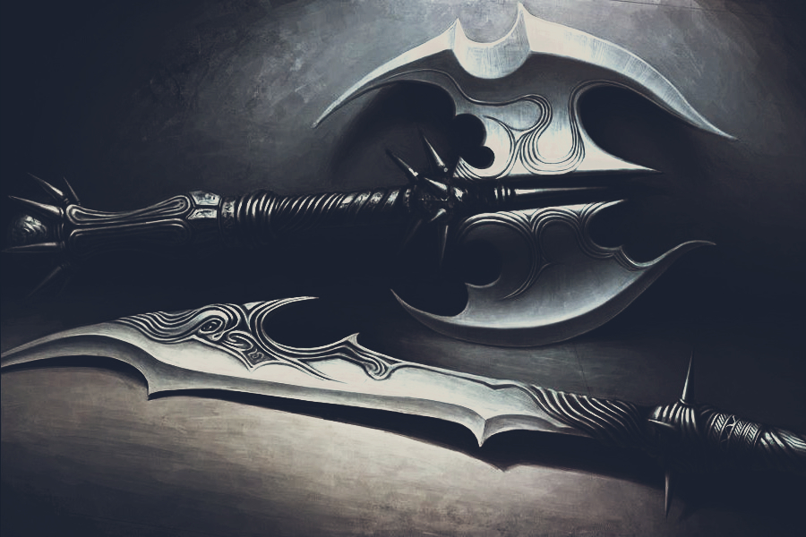

Prince is the main weapon Dagger of Time. The left hand can take a sword, ax, mace or a knife, which may have special properties, such as the inviolability of the ability to overturn the enemy after the first impact, the ability to kill with a direct strike, invisibility or sand replenishment. In the Dark Prince's second weapon is a powerful long chain. At the end of the game Prince finds the sword of his father, who can not be thrown out and that kills all normal enemies with a single blow .
Daggertail: Basic weapon. Only weapon used by the Dark Prince. It is extremely effective and useful. It serves both as weapon to kill enemies (free-form fighting and speed kill), as well as whip.
Royal sword: Extra weapon. Available from the stage 35. The Well of Ancestors. Only weapon which isn't wearing out at all. It isn't possible to throw away it also but it is no minus, since it is extremely quick and effective.
Dagger of time: Basic weapon, available from the stage 6. The Throne Room. Efficiency of the dagger of time is as weak as his predecessor, but it is possible to use it for breaking objects with purpose of acquiring sands of the time from them. Necessary to execute the speed kill attack.

Axe and sword: Extra weapon. It is inflicting heaviest wounds, but it is slowest at the same time. It is possible to take it away from Reptus. All its features (the speed and the power of inflicted wounds and durability), determining the combative value are suitably balanced. It is suitable for everything. It is possible to take the sabre away from the Guard.
The game has 4 secret weapons to get everyone, it is necessary to enter the code, and for the last three - and even complete the game at a certain level of complexity.
More can be found comic weapon - a wooden ax, it is destroyed after one hit, but if to throw him, he go astray opponent down.